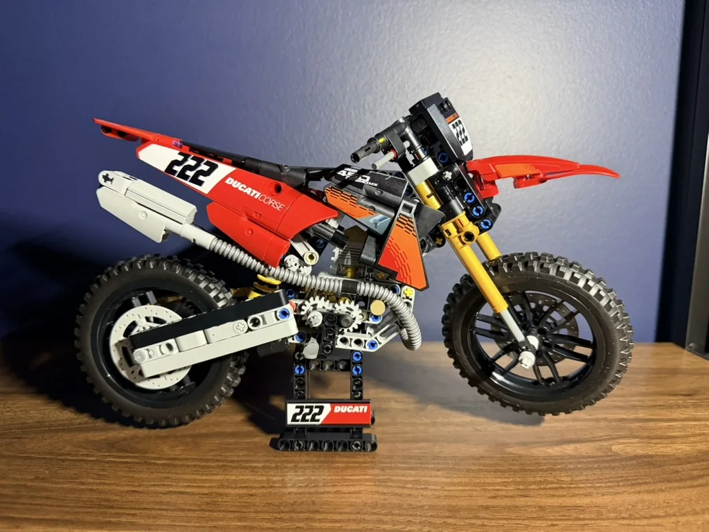

#001 · UPCOMING
Fanbricks 1/800 World Trade Center
Overview → Box → Bags → Build → Progress → Final Piece → Reveal → Thoughts.
Sets worth slowing down for. Follow the process, see progress and explore the details behind each finished build.
Overview → Box → Bags → Build → Progress → Final Piece → Reveal → Thoughts.

A challenging 4,099-piece 1:8 scale build with impressive mechanical detail.
View Build →
A compact 457-piece motorcycle build with suspension, chain drive and exposed mechanical detail.
View Build →